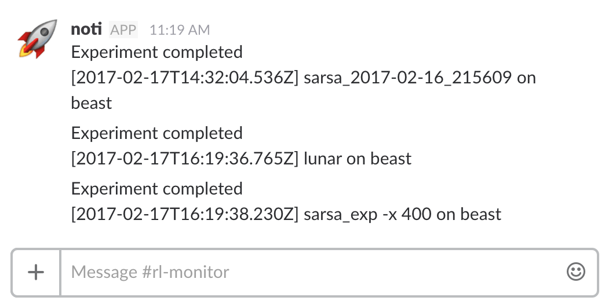
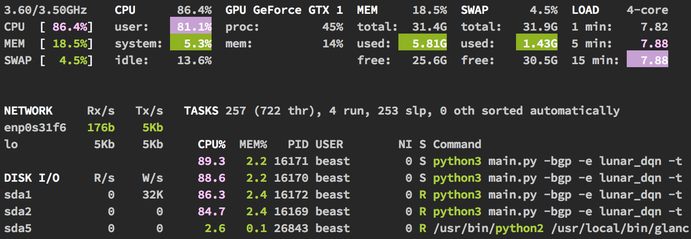
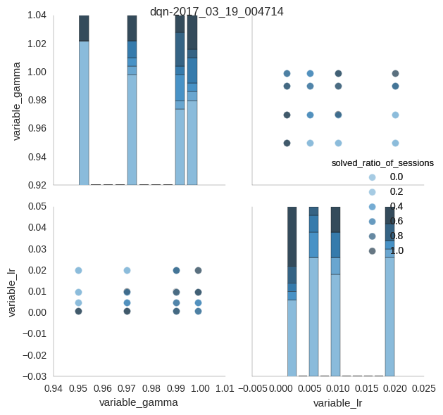

OpenAI Lab 


(DOC UNDER CONSTRUCTION)
An experimentation system for Reinforcement Learning using OpenAI and Keras.
The OpenAI Lab is created to do Reinforcement Learning (RL) like science - theorize, experiment. It provides an easy to use interface to OpenAI Gym and Keras, combined with an automated experimental and analytics framework.
While these are powerful tools, they take a lot to get running. Of many implementations we saw which solve OpenAI gym environments, many had to rewrite the same basic components instead of just the new components being researched.
To address this, the Lab does three things.
- Handles the basic RL environment and algorithm setups.
- Provides a standard, extensible platform with reusable components for developing deep reinforcement learning algorithms.
- Provides a rigorous experimentation system with logs, plots and analytics for testing new RL algorithms. Experimental settings are logged in a standardized format so that solutions can be reproduced by anyone using the Lab.
With OpenAI Lab, we could focus on researching the essential elements of reinforcement learning such as the algorithm, policy, memory (experience replay), and parameter tuning to solve the OpenAI environments. We could also test our hypotheses more reliably.
See the Best Solutions to some OpenAI environments that OpenAI Lab users have produced.
Run the Lab
Next, see Installation and Usage.

Timelapse of OpenAI Lab, solving CartPole-v0.
Installation
1. Clone repo and run the setup script:
git clone https://github.com/kengz/openai_lab.git
cd openai_lab
./bin/setup
bin/setup installs all the dependencies the same way as our servers and CircleCI builds; inspect or change it as needed. Also make sure your dependencies are the most updated - check the major required versions here.
2. Keras needs a backend in your home directory; setup ~/.keras/keras.json using the example file in config/keras.json.
{
"epsilon": 1e-07,
"image_dim_ordering": "tf",
"floatx": "float32",
"backend": "tensorflow"
}
3. bin/setup also creates the needed config files needed for lab usage. See sections below for more info.
config/default.jsonfor local development, used whengruntis ran without a production flag.config/production.jsonfor production lab run whengrunt -prodis ran with the production flag-prod.
{
"data_sync_destination": "~/Dropbox/openai_lab/data",
"NOTI_SLACK_DEST": "#rl-monitor",
"NOTI_SLACK_TOK": "GET_SLACK_BOT_TOKEN_FROM_https://my.slack.com/services/new/bot",
"experiments": [
"dev_dqn",
"dqn"
]
}
Setup Data Auto-sync
We find it extremely useful to have data file-sync when running the lab on a remote server. This allows us to have a live view of the experiment graphs and data on our Dropbox app, on a computer or a smartphone.
For auto-syncing lab data/ we use Grunt file watcher for automatically copying data files to Dropbox. In your dropbox, set up a shared folder ~/Dropbox/openai_lab/data and sync to desktop.
Setup Auto-notification
Experiments take a while to run, and we find it useful also to be notified automatically on completion. We use noti, which is also installed with bin/setup.
Set up a Slack, create a new channel #rl_monitor, and get a Slack bot token.
 Notifications from the lab running on our remote server beast.
Setup Experiments
There are many existing experiments specified in rl/spec/*_experiment_specs.json, and you can add more. Pick the experiment_names (e.g. "dqn", "lunar_dqn"), specify in config/default.json or config/production.json. Then check usage to run the lab.
Dependencies
There is more than a dozen of dependencies. For the full list, inspect bin/setup. Here are some major ones and their minimal required versions. If Lab fails to run, check these first:
python3 >= 3.4node >= 7.0tensorflow >= 1.0ortensorflow-gpu >= 1.0theano == 0.8.2keras >= 1.2gym[all] >= 0.7
Hardware
For setting up your own hardware, especially with a GPU, googling will help more than we could. Also, setup is usually non-trivial since there’re so many moving parts. Here’s the recommended references:
- A ~$1000 PC build (more expensive now ~$1200; buy your parts during Black Friday/sales.)
- The official TensorFlow installation guide, with GPU setup info
- Getting CUDA 8 to Work With openAI Gym on AWS and Compiling Tensorflow for CUDA 8 Compatibility
- Major OpenAI issue with SSH with xvfb failing with NVIDIA Driver due to opengl files
- NVIDIA cannot install due to X server running
- When login fails on Ubuntu after Nvidia installation
Usage
To understand the Lab’s Framework and Demo, skip to the next section.
The general flow for running a production lab is:
- Specify experiment specs in
rl/spec/*_experiment_specs.json, e.g."dqn", "lunar_dqn" - Specify the names of the experiments to run in
config/production.json - Run the lab, e.g.
grunt -prod -resume
Commands
We use Grunt to run the lab - set up experiments, pause/resume lab, run analyses, sync data, notify on completion. Internally grunt runs the python command (harder to use), logged to stdout as >> Composed command: python3 main.py ...
The useful grunt commands are:
# when developing experiments specified in default.json
grunt
# run real lab experiments specified in production.json
grunt -prod
# run lab over ssh on remote server
grunt -prod -remote
# resume lab (previously incomplete experiments)
grunt -prod -remote -resume
# plot analysis graphs only
grunt analyze -prod
# clear data/ folder and cache files
grunt clear
See below for the full Grunt Command Reference or the Python Command Reference.
development mode:
- All grunt commands default to this mode
- specify your dev experiment in
config/default.json - use only when developing your new algorithms
- the file-sync is in mock mode (emulated log without real file copying)
- no auto-notification
production mode:
- append the flag
-prodto yourgruntcommand - specify your full experiments in
config/production.json - use when running experiments for real
- the file-sync is real
- has auto-notification to Slack channel
Run Remotely
If you’re using a remote server, run the commands inside a screen. That is, log in via ssh, start a screen, run, then detach screen.
# enter the screen with the name "lab"
screen -S lab
# run real lab over ssh, in resume mode
grunt -prod -remote -resume
# use Cmd+A+D to detach from screen, then Cmd+D to disconnect ssh
# to resume screen next time
screen -r lab
# use Cmd+D to terminate screen when lab ends
Since a remote server is away, you should check the system status occasionally to ensure no overrunning processes (memory growth, large processes, overheating). Use glances (already installed in bin/setup) to monitor your expensive machines.
 Glances on remote server beast.
Resume Lab
Experiments take a long time to complete, and if your process gets terminated, resuming the lab is trivial with a -resume flag: grunt -prod -remote -resume. This will use the config/history.json:
{
"dqn": "dqn-2017_03_19_004714"
}
The config/history.json is created in the last run that maps experiment_names to experiment_ids, and resume any incomplete experiments based on that experiment_id. You can manually tweak the file to set the resume target of course.
Grunt Command Reference
By default the grunt command (no task or flag) runs the lab in development mode using config/default.json.
The basic grunt command pattern is
grunt <task> -<flag>
# again, the useful grunt commands are:
# when developing experiments specified in default.json
grunt
# run real lab experiments specified in production.json
grunt -prod
# run lab over ssh on remote server
grunt -prod -remote
# resume lab (previously incomplete experiments)
grunt -prod -remote -resume
# plot analysis graphs only
grunt analyze -prod
# clear data/ folder and cache files
grunt clear
The <task>s are:
- (default empty): run the lab
analyze: generate analysis data and graphs only, without running the lab. This can be used when you wish to see the analysis results midway during a long-running experiment. Run it on a separate terminal window asgrunt analyze -prodclear: clear thedata/folder and cache files. Be careful and make sure your data is already copied to the sync location
The <flag>s are:
-prod: production mode, useconfig/production.json-resume: resume incomplete experiments fromconfig/history.json-remote: when running over SSH, supplies this to use a fake display-best: run the finalized experiments with gym rendering and live plotting; without param selection. This uses the defaultparaminexperiment_specs.jsonthat shall be updated to the best found.-quiet: mute all python logging in grunt. This is for lab-level development only.
Python Command Reference
The Python command is invoked inside Gruntfile.js under the composeCommand function. Change it if you need to.
The basic python command pattern is:
python3 main.py -<flag>
# most common example, with piping of terminal log
python3 main.py -bp -t 5 -e dqn | tee -a ./data/terminal.log;
The python command
-a: Runanalyze_experiment()only to plotexperiment_data. Default:False-b: blind mode, do not render graphics. Default:False-d: log debug info. Default:False-e <experiment>: specify which inside therl/spec/*_experiment_spec.jsonto run. Default:-e dev_dqn. Can be aexperiment_name, experiment_id.-p: run param selection. Default:False-q: quiet mode, log warning only. Default:False-t <times>: the number of sessions to run per trial. Default:1-x <max_episodes>: Manually specifiy max number of episodes per trial. Default:-1and program defaults to value inrl/spec/problems.json
Experiments
The experimental framework design and terminology should be familiar, since it’s borrowed from experimental science. The Lab runs experiments and produces data for analysis.
Definition
An experiment runs separate trials by varying parameters. Each trial runs multiple sessions for averaging the results.
An experiment consists of:
- an environment (problem) from OpenAI Gym
- an agent to solve the environment.
Specification
An experiment is specified by an experiment_spec in rl/spec/*_experiment_specs.json.
{
"dqn": {
"problem": "CartPole-v0",
"Agent": "DQN",
"HyperOptimizer": "GridSearch",
"Memory": "LinearMemoryWithForgetting",
"Optimizer": "AdamOptimizer",
"Policy": "BoltzmannPolicy",
"PreProcessor": "NoPreProcessor",
"param": {
"lr": 0.02,
"gamma": 0.99,
"hidden_layers": [64],
"hidden_layers_activation": "sigmoid",
"exploration_anneal_episodes": 10
},
"param_range": {
"lr": [0.001, 0.005, 0.01, 0.02],
"gamma": [0.95, 0.97, 0.99, 0.999],
"hidden_layers": [
[16],
[32],
[64],
[16, 8],
[32, 16]
]
}
}
}
It consists of:
experiment_name: the key of the JSON. e.g.dqnproblem: name of the environment. e.g.CartPole-v0- agent: and its components in
rl/, specified by the class nameAgent: the main agent class, typically with the algorithm likeDQN, DDPGHyperOptimizer: hyperparameter optimization algorithms used to vary the agent parameters and run trials with themMemory: the memory module of the agent, to specify how agent control or access memoryOptimizer: the neural network optimizer of AgentPolicy: the externalized policy of AgentPreProcessor: for the environment states. Useful for Atari with images.
param: the default parameter values used (control variables)param_range: the hyperparameter space ranges to search through byHyperOptimimzer(experiment variables).
Breakdown
How experiments > trials > sessions are organized and ran.
When the Lab runs an experiment with experiment_name (e.g. dqn):
- it creates a timestamped
experiment_id(dqn-2017_03_19_004714) - the experiment runs multiple trials over the hyperparameter space
- the trials are ordered for resumability (in case machine dies)
- each trial has
trial_id(dqn-2017_03_19_004714_t0), tied to a unique set of param values - a trial runs multiple sessions
- each session has
session_id(dqn-2017_03_19_004714_t0_s0) - a session runs the environment-agent, produces graphs and
session_datai.e.sys_vars - the session saves its graph to
<session_id>.png - the session returns
sys_varsto its trial
- each session has
- the trial gathers all the
sys_vars, run some averaging analytics, then compose all that intotrial_data - the trial returns the
trial_dataand saves it to<trial_id>.json
- the experiment composes all
trial_datainto aexperiment_data - it runs analytics to produce graphs
<experiment_id>_analysis.png, <experiment_id>_correlation.png - it compute the
fitness_scorefor each trial, rank them by best-first, then save the data grid to<experiment_id>_analysis_data.csv - experiment ends
Lab Demo
Given the framework explained above, here’s a quick demo. Suppose we aim to solve the CartPole-v0 problem with the plain DQN agent. Suppose again for this experiment, we implement a new agent component, namely a Boltzmann policy, and try to find the best parameter sets for this new agent.
Specify Experiment
The example below is fully specified in rl/spec/classic_experiment_specs.json under dqn:
{
"dqn": {
"problem": "CartPole-v0",
"Agent": "DQN",
"HyperOptimizer": "GridSearch",
"Memory": "LinearMemoryWithForgetting",
"Optimizer": "AdamOptimizer",
"Policy": "BoltzmannPolicy",
"PreProcessor": "NoPreProcessor",
"param": {
"lr": 0.02,
"gamma": 0.99,
"hidden_layers": [64],
"hidden_layers_activation": "sigmoid",
"exploration_anneal_episodes": 10
},
"param_range": {
"lr": [0.001, 0.005, 0.01, 0.02],
"gamma": [0.95, 0.97, 0.99, 0.999],
"hidden_layers": [
[16],
[32],
[64],
[16, 8],
[32, 16]
]
}
}
}
Specifically of interests, we have specified the variables:
- experiment_name:
dqn - problem: CartPole-v0
- variable agent component:
Boltzmannpolicy - control agent variables:
DQNagentLinearMemoryWithForgettingAdamOptimizerNoPreProcessor
- hyperparameter space: the
"param_range"JSON - hyperparameter optimizer:
GridSearch
Given GridSearch HyperOptimizer, this experiment will try all the discrete combinations of the param_range, which makes for 4x4x5=80 trials. Each trial will run a max of 5 sessions (terminate on 2 if fail to solve). Overall, this experiments will run at most 80 x 5 = 400 sessions, then produce experiment_data and the analytics.
Lab Workflow
The example workflow to setup this experiment is as follow:
- Add the new theorized component
Boltzmanninrl/policy/boltzmann.py - Specify
dqnexperiment spec inrl/spec/classic_experiment_spec.jsonto include this new variable, reuse the other existing RL components, and specify the param range. - Add this experiment to the lab queue in
config/production.json - Run experiment with
grunt -prod - Analyze the graphs and data
Now that you can produce the experiment data and graphs, see how to analyze them.
Analysis
How to analyze your lab results, and contribute to Best Solutions
Follow the running process chain of data n graphs produced.
submit these when u solve (link to submission)
fitness ratio explanation
Lab Results

The dqn experiment analytics generated by the Lab. This is a pairplot, where we isolate each variable, flatten the others, plot each trial as a point. The darker the color the higher ratio of the repeated sessions the trial solves.
| fitness_score | mean_rewards_per_epi_stats_mean | mean_rewards_stats_mean | epi_stats_mean | solved_ratio_of_sessions | num_of_sessions | max_total_rewards_stats_mean | t_stats_mean | trial_id | variable_gamma | variable_hidden_layers | variable_lr |
|---|---|---|---|---|---|---|---|---|---|---|---|
| 5.305994917071314 | 1.3264987292678285 | 195.404 | 154.2 | 1.0 | 5 | 200.0 | 199.0 | dqn-2017_03_19_004714_t79 | 0.999 | [64] | 0.02 |
| 5.105207228739003 | 1.2763018071847507 | 195.13600000000002 | 160.6 | 1.0 | 5 | 200.0 | 199.0 | dqn-2017_03_19_004714_t50 | 0.99 | [32] | 0.01 |
| 4.9561426920909355 | 1.2390356730227339 | 195.26000000000002 | 168.6 | 1.0 | 5 | 200.0 | 199.0 | dqn-2017_03_19_004714_t78 | 0.999 | [64] | 0.01 |
| 4.76714626254895 | 1.1917865656372375 | 195.106 | 172.4 | 1.0 | 5 | 200.0 | 199.0 | dqn-2017_03_19_004714_t71 | 0.999 | [32] | 0.02 |
| 4.717243567762263 | 1.1793108919405657 | 195.56400000000002 | 167.2 | 1.0 | 5 | 200.0 | 199.0 | dqn-2017_03_19_004714_t28 | 0.97 | [32] | 0.001 |
Analysis data table, top 5 trials.
On completion, from the analytics, we conclude that the experiment is a success, and the best agent that solves the problem has the parameters:
- lr: 0.02
- gamma: 0.999
- hidden_layers_shape: [64]
Variables
the aggregate … see analytics module
Data
jsons and sorted CSV
Graphs
Main and correlation, how to read
Metrics
(pending long writeup)
OpenAI Lab exists to address 2 major problems in RL, and WildML’s Denny sums them up best in his post Engineering Is The Bottleneck In (Deep Learning) Research. They are:
1. the difficulty of building upon other’s work
As the Lab grows, we hope that engineers and researchers can experiment with an idea fast by building on top of our existing components.
2. the lack of rigor in comparisons
Multiple experiments running in the Lab will produce the same analytics and the evaluation metrics. This will allow us to compare algorithms and problems meaningfully, and that is the point of the Lab’s Solution Matrix.
We now describe the evaluation metrics for problems and algorithms.
Problem Evaluation Metrics
problem x {algorithms} ~ solutions
fitness score on 4 parts: stability and reproducibility (solve ratio), speed (min episodes), potential (max reward), square for granularity
mean_rewards_per_epi * (1+solved_ratio_of_sessions)**2
ideal_mean_rewards_per_epi = mean_rewards / (epi/solved_epi_speedup)
ideal_solved_ratio = 1
ideal_fitness_score = fitness_score(
ideal_mean_rewards_per_epi, ideal_solved_ratio)
return ideal_fitness_score
Algorithm Evaluation Metrics
algorithm x {problems} ~ cross-solutions
Best Solutions
Algorithms and best solutions by OpenAI Lab users. We want people to start from working solutions instead of stumbling their ways there.
Submission instructions
If you invent a new algorithm/combination that beats the best solutions, please submit a Pull Request to the OpenAI Lab.
Refer to the PR template for the submission guideline. See some previous example solution PRs.
Solution Matrix
A matrix of the best fitness_score of Algorithms v.s. Problems. The list of accepted solutions can be seen in the solution PRs
| DQN | double-DQN | SARSA | DDPG | |
|---|---|---|---|---|
| CartPole-v0 | 5.305995 | 5.658951 | - | - |
| CartPole-v1 | 7.678957 | 9.089594 | - | - |
| Acrobot-v1 | - | - | - | - |
| MountainCar-v0 | - | - | - | - |
| MountainCarContinuous-v0 | - | - | - | - |
| Pendulum-v0 | - | - | - | - |
| LunarLander-v2 | - | - | - | - |
| LunarLanderContinuous-v2 | - | - | - | - |
| BipedalWalker-v2 | - | - | - | - |
| BipedalWalkerHardcore-v2 | - | - | - | - |
| CarRacing-v0 | - | - | - | - |
| AirRaid-v0 | - | - | - | - |
| Alien-v0 | - | - | - | - |
| Assault-v0 | - | - | - | - |
| Breakout-v0 | - | - | - | - |
| MsPacman-v0 | - | - | - | - |
| Pong-v0 | - | - | - | - |
| Qbert-v0 | - | - | - | - |
| SpaceInvader-v0 | - | - | - | - |
| FlappyBird-v0 | - | - | - | - |
| Snake-v0 | - | - | - | - |
Algorithms
The status of the algorithms in OpenAI Lab. Feel free to invent new ones!
Pending: we still need a way to cross-evaluate algorithms. Refer to the NEC paper. Perhaps use Normalized human scores per episode vs Millions of Frames.
| algorithm | implemented? | eval score |
|---|---|---|
| DQN | ✓ | - |
| double-DQN | ✓ | - |
| dueling-DQN | - | - |
| SARSA | ✓ | - |
| prioritized replay | in-progress | - |
| Q*(lambda) | - | - |
| Retrace(lambda) | - | - |
| CEM (Cross Entropy Method) | - | - |
| PG (Policy Gradient) | - | - |
| DPG (Deterministic Policy Gradient aka actor-critic) | in-progress | - |
| DDPG (Deep-DPG, aka actor-critic with target networks) | in-progress | - |
| A3C (asynchronous advantage actor-critic) | - | - |
| TRPO | - | - |
| Neural Episodic Control (NEC) | next | - |
| EWC (Elastic Weight Consolidation) | - | - |
Problems
The list of accepted solutions can be seen in the solution PRs
Classic Problems
| problem | fitness score | epis before solve / best 100-epi mean | author | experiment_spec |
|---|---|---|---|---|
| CartPole-v0 | 5.658951 | 7 | kengz/lgraesser | double_dqn |
| CartPole-v1 | 9.089594 | 16 | kengz/lgraesser | double_dqn_v1 |
| Acrobot-v1 | - | - | - | - |
| MountainCar-v0 | - | - | - | - |
| MountainCarContinuous-v0 | - | - | - | - |
| Pendulum-v0 | - | - | - | - |
Box2D Problems
| problem | fitness score | epis before solve / best 100-epi mean | author | experiment_spec |
|---|---|---|---|---|
| LunarLander-v2 | - | - | - | - |
| LunarLanderContinuous-v2 | - | - | - | - |
| BipedalWalker-v2 | - | - | - | - |
| BipedalWalkerHardcore-v2 | - | - | - | - |
| CarRacing-v0 | - | - | - | - |
Atari Problems
| problem | fitness score | epis before solve / best 100-epi mean | author | experiment_spec |
|---|---|---|---|---|
| AirRaid-v0 | - | - | - | - |
| Alien-v0 | - | - | - | - |
| Assault-v0 | - | - | - | - |
| Breakout-v0 | - | - | - | - |
| MsPacman-v0 | - | - | - | - |
| Pong-v0 | - | - | - | - |
| Qbert-v0 | - | - | - | - |
| SpaceInvader-v0 | - | - | - | - |
PyGame Problems
| problem | fitness score | epis before solve / best 100-epi mean | author | experiment_spec |
|---|---|---|---|---|
| FlappyBird-v0 | - | - | - | - |
| Snake-v0 | - | - | - | - |
Universe Problems
| problem | fitness score | epis before solve / best 100-epi mean | author | experiment_spec |
|---|---|---|---|---|
| - | - | - | - | - |
Development
(pending writeup)
This is still under active development, and documentation is sparse. The main code lives inside rl/.
The design of the code is clean enough to simply infer how things work by example.
data/: data folders grouped per experiment, each of which contains all the graphs per trial sessions, JSON data file per trial, and csv metrics dataframe per run of multiple trialsrl/agent/: custom agents. Refer tobase_agent.pyanddqn.pyto build your ownrl/hyperoptimizer/: Hyperparameter optimizers for the Experimentsrl/memory/: RL agent memory classesrl/optimizer/: RL agent NN optimizer classesrl/policy/: RL agent policy classesrl/preprocessor/: RL agent preprocessor (state and memory) classesrl/spec/: specify new problems and experiment_specs to run experiments for.rl/analytics.py: the data analytics module for output experiment datarl/experiment.py: the main high level experiment logicrl/util.py: Generic util
Each run is an experiment that runs multiple Trials (not restricted to the same experiment_id for future cross-training). Each Trial runs multiple (by flag -t) Sessions, so an trial is a sess_grid.
Each trial collects the data from its sessions into trial_data, which is saved to a JSON and as many plots as there are sessions. On the higher level, experiment analyses the aggregate trial_data to produce a best-sorted CSV and graphs of the variables (what’s changed across experiments) vs outputs.
problem
simple, the split, how to add. each JSON key is?
Agent
HyperOptimizer
use which first:
LineSearch
GridSearch
RandomSearch
HyperOptimizer Roadmap
Implementation Guideline
All implemented hyperoptimizers shall extend the base HyperOptimizer class in rl/hyperoptimizer/base_hyperoptimizer.py and follow its design for compatibility. Below we show this design to be general theoretically and practically. Moreover, do not use bloated dependencies.
Theoretical design:
A hyperoptimizer is a function h that takes:
- a trial (objective) function
Trial - a parameter space
P(implemented inexperiment_spec)
and runs the algorithm:
- search the next
pinPusing its internal search algorithm, add to its internalparam_search_list - run a (slow) function
Trial(p) = fitness_score(inside trial data) - update search using the feedback
fitness_score - repeat until max steps or fitness condition met
Note that the search space P is a tensor space product of m bounded real spaces R and n bounded discrete spaces N.
Implementation requirements:
- we want order-preserving and persistence in search for the ability to resume/reproduce an experiment.
- the search algorithm may have its own internal memory/belief to facilitate search.
- the Trial function shall be treated as a blackbox
Trial(p) = fitness_scorewith input/output(p, fitness_score)for the generality of implementation/
Specification of search space:
1. for real variable, specify a distribution (an interval is just a uniformly distributed space). specify in experiment_grid.param like so:
"lr": {
"min": 0.0005,
"max": 0.05
}
2. for discrete variable, specify a list of the values to search over (since it is finite anyway). specify in experiment_grid.param like so:
"lr": [0.01, 0.02, 0.05, 0.1, 0.2]
The hyperopt implementation shall be able to take these 2 types of specs and construct its search space.
Note that whether a variable is real or discrete can be up to the author; some variable such as lr can be sampled from interval 0.001 to 0.1 or human-specified options [0.01, 0.02, 0.05, 0.1, 0.2]. One way may be more efficient than the other depending on the search algorithm.
The experiment will run it as:
# specify which hyperoptimizer class to use in spec for bookkeeping
Hopt = get_module(GREF, experiment_spec['HyperOptimizer'])
hopt = Hopt(Trial, **experiment_kwargs)
experiment_data = hopt.run()
Memory
Optimizer
Policy
PreProcessor
Roadmap
Check the latest under the Github Projects
Contributing
Authors
Note: we are not affiliated with OpenAI; the OpenAI Lab is not tied to any organizations.
- Wah Loon Keng
- Laura Graesser